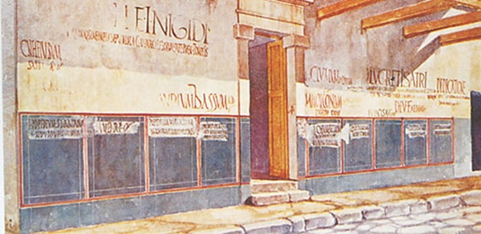

Помпеи – погребенный город
Городские магистраты в истории Помпей
В III в. до н. э.Помпеями управлял городской совет. Среди вопросов его ведения было, в частности, строительство. Непосредственное наблюдение за строительными работами и их оплату осуществлял квайстур (латинский вариант – квестор), должностное лицо, отвечавшее за городскую казну. Верховная власть в городе принадлежала должностному лицу с названием «meddissa tuvtiksa», что переводят как «градоправитель» [1].
В 59 г. н. э. Помпеи печально прославились побоищем в стенах города. Сражение началось между горожанами Помпей и Нуцерии во время гладиаторских боев. Победили в этой потасовке помпейцы [11]. Информация о побоище дошла до императора Нерона, который поручил сенату провести расследование. В итоге сенат запретил Помпеям 10 лет проводить гладиаторские игры, а их организатор Ливиней Регул отправился в изгнание. Интересно то, что Ливиней Регул несколькими годами ранее был лишен звания сенатора. То есть, опальный представитель правящего класса мог найти убежище в Помпеях и стать благодетелем горожан.
Высшими должностными лицами в Помпеях были два его избираемых правителя – дуумвиры. Они собирали городской совет и председательствовали в нем. Чтобы стать дуумвиром, карьеристу из Помпей нужно было пройти через должность эдила, которая открывала ее исполнителю дорогу в городской совет. Члены городского совета носили это звание пожизненно. Эдилы отвечали за городское благоустройство – снабжение хлебом, содержание улиц и бань, занимались организацией зрелищ.
Раз в пять лет избранные дуумвиры назывались квинквенналами (пятигодниками). Они обновляли списки городского совета – вносили новых людей, вычеркивали умерших и тех, кто потерял право на членство в совете за преступления. Также они составляли списки граждан города [1].
В Помпеях и других римских городах должности дуумвира и квинквеннала открывали двери в городскую элиту, но требовали от соискателя богатства. Мария Сергеенко в своей книге «Помпеи» пишет, что дуумвир Помпей вносил при вступлении в должность 10 000 сестерциев [8].
Вокруг выборов должностных лиц кипели страсти, сопоставимые с выборами консулов в республиканском Риме. Стены города сохранили записи, призывавшие голосовать за того или иного из граждан Помпей, желающего стать дуумвиром или эдилом. Интересно, что в основном агитация касалась должности эдила.
В Помпеях жило около 12 тысяч человек, и около 24 тысяч – в сельской округе. Половина из них была рабами. Большую часть оставшихся составляли женщины и дети. Таким образом, электоратом во время выборов было около 2500 жителей города и 5000 – в сельской округе.
Надписи закрашивали и писали поверх них новые. Агитационная надпись могла быть адресована конкретному гражданину Помпей. Житель города мог выбить надпись на стене своего дома, чтобы показать свою позицию.
Агитировали за кандидатов и профессиональные объединения. Например, плотники, извозчики, пекари или ювелиры. Своих кандидатов предлагали горожанам члены союза «Молодежь», в который входили молодые люди из знатных семей.
Выборы в Помпеях напоминали выборы в других городах Римского мира. Гражданская община делилась на курии, каждая из которых выбирала своего кандидата.
Выборы проходили в марте, а в июле магистраты приступали к исполнению обязанностей. Помпейцы могли становиться дуумвирами повторно, но не два года подряд [1].
Таким образом – магистратами в Помпеях нередко становились выходцы из Рима. Магистраты подразделялись на дуумвиров, эдилов и квинквенналов.
Галерея